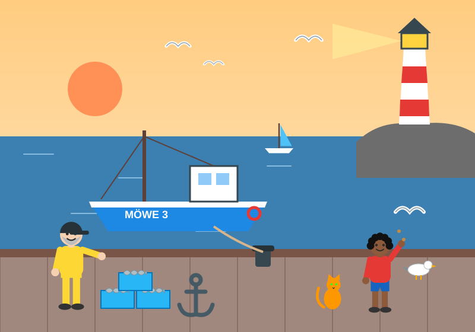

Klassenarbeit „Im Hafen“
Bildbeschreibung zu einem unbekannten Bild: Teil A mit kurzen Übungsaufgaben (15 Punkte), Teil B mit einer vollständigen Bildbeschreibung (25 Punkte). Dazu Fördervariante, Erwartungshorizont, Musterlösung, Bewertungsbogen, Berichtigungsanleitung und Notenrechner.
Hinweise für die Lehrkraft
Bild E „Im Hafen“ vorher nicht im Unterricht zeigen! Die Arbeit prüft, ob die Kinder das Gelernte auf ein unbekanntes Bild übertragen können. Das Bild ist in Stil und Schwierigkeit mit den Übungsbildern „Sommertag am See“ und „Auf dem Schulhof“ vergleichbar (klare Gliederung in Vorder-, Mittel- und Hintergrund).
Eckdaten
- Dauer: 45 Minuten (Variante 90 Minuten siehe unten)
- Punkte: 40 – Teil A 15 P., Teil B 25 P.
- Bild: „Im Hafen“, Zeichnung/Illustration aus dem Unterrichtsmaterial (Zeichner/in unbekannt)
- Kompetenzen: Bildbereiche und Ortsangaben, Präpositionen mit Dativ, treffende Verben, genaue Adjektive, Präsens, Sachlichkeit, Aufbau Einleitung – Hauptteil – Schluss
- Vorbereitung: Lernthekenstunde (Stunde 12) und Selbsteinschätzung (HA 12, Lernlandkarte AB 0) vorher einsammeln und sichten
Material pro Kind
- Deckblatt mit farbig gedrucktem Bild (Farben sind Teil der Aufgabe: gelbe Regenkleidung, orange Katze, rot-weißer Leuchtturm)
- Teil A (Aufgaben A1–A6)
- Teil B: Schreibplan-Blatt + zwei Reinschrift-Blätter (bei Bedarf weiteres liniertes Papier bereithalten)
- Für Kinder mit Nachteilsausgleich: Fördervariante ★ (Teil A ★ und Teil B ★ mit Gerüst)
- Eigenes Mäppchen; Bleistift für den Schreibplan, Füller/Tintenroller für die Reinschrift
Ablauf (45 Minuten)
| Phase | Zeit | Was passiert? | Hinweis |
|---|---|---|---|
| Start | 0–3′ | Blätter austeilen, Namen eintragen. Lehrkraft liest die Hinweise auf dem Deckblatt laut vor. Impuls: „Schaut euch das Bild zuerst eine Minute lang nur an – ohne zu schreiben. Denkt an Lupos erste Stufe: Schauen!“ | Fragen zum Verständnis jetzt klären, nicht zum Inhalt. |
| Teil A | 3–15′ | Kurzaufgaben A1–A6 in Einzelarbeit. | Empfehlung: höchstens 12 Minuten. Nach 15 Minuten kurzer Hinweis: „Wer noch bei Teil A ist, wechselt jetzt bitte zu Teil B.“ |
| Schreibplan | 15–22′ | Stichwortzettel zu Teil B ausfüllen (Lupos Stufe 2: Ordnen). | Der Schreibplan wird nicht bewertet, ist aber Pflicht – er verhindert Sprünge in der Reihenfolge. |
| Reinschrift | 22–40′ | Bildbeschreibung schreiben (Einleitung, Hauptteil, Schluss). | Zeitansagen bei 30′ und 40′ („Noch zehn Minuten“, „Jetzt mit dem Schluss anfangen“). |
| Prüfen | 40–45′ | Mit der Checkliste am Ende von Teil B den eigenen Text prüfen und verbessern (Lupos Stufe 5). | Verbesserungen sauber durchstreichen und darüberschreiben – kein Tintenkiller-Zwang. |
Bild zeigen: Ausdruck oder Beamer
- Empfohlen: Deckblatt farbig drucken (A4, Querformat-Bild in voller Breite). So kann jedes Kind nah heranschauen und das Bild beim Schreiben neben das Blatt legen.
- Alternative Beamer: Bild während der gesamten Arbeitszeit projizieren (Beamer-Seite nicht verwenden, falls dort Hilfen eingeblendet sind – besser die Bilddatei
bilder/im-hafen.svgdirekt öffnen). Raum nicht abdunkeln, Sitzplätze vorher auf Sicht prüfen. Kinder mit Sehschwäche erhalten trotzdem einen Farbausdruck. - Schwarz-Weiß-Kopien sind nicht geeignet.
Erlaubte Hilfen
- Erlaubt: Bild, Schreibplan-Feld, die Checkliste in Teil B.
- Nicht erlaubt: eigener Spickzettel (HA 11), Hefter, Wortspeicher-Plakate – Plakate im Raum vorher abhängen oder umdrehen.
- Ein Wörterbuch kann nach Absprache in der Fachgruppe erlaubt werden.
- Lupo-Hinweise auf den Blättern sind allgemeine Erinnerungen und keine inhaltlichen Hilfen.
Fördervariante ★: Für Kinder mit festgestelltem Förderbedarf, Nachteilsausgleich (z. B. LRS) oder geringen Deutschkenntnissen (DaZ) gibt es weiter unten eine Fassung derselben Arbeit mit Wortspeicher (Nomen mit Artikel), Satzanfängen und einem Schreibgerüst. Aufgaben, Bild und Punkte bleiben gleich.
- Zeitzugabe: in der Regel 10–15 Minuten (bzw. laut Förderplan).
- LRS: Rechtschreibung fließt in diese Arbeit ohnehin nicht als eigenes Kriterium ein. Vergrößerter Druck (A3) möglich.
- DaZ: Artikel- und Dativhilfe in A2 (★), Wortspeicher mit der/die/das. Ein zweisprachiges Wörterbuch kann erlaubt werden.
- Ob Hilfen im Zeugnis vermerkt werden oder die Bewertung angepasst wird, richtet sich nach den Vorgaben deines Bundeslandes und den Beschlüssen der Klassenkonferenz. Bitte vorher klären.
Bei einer Doppelstunde bleiben Aufgaben und Punkte gleich. Die zusätzliche Zeit wird so verteilt:
- Teil A: 15 Minuten.
- Bild in Ruhe betrachten und Schreibplan anlegen: 15 Minuten (zusätzlich: Blickweg mit Pfeilen in das Bild auf dem Deckblatt einzeichnen).
- Reinschrift: 40 Minuten.
- Überarbeitung (Pflicht): 15 Minuten. Die Kinder prüfen ihren Text allein mit der Checkliste wie bei der Textlupe (Stunde 10) und verbessern mit einem andersfarbigen Stift.
- Puffer: 5 Minuten.
Da mehr Zeit zur Verfügung steht, kann beim Kriterium „Inhalt/Vollständigkeit“ die Erwartung um etwa zwei Bildelemente pro Punktstufe angehoben werden.
Rückgabe (Stunde 14)
Zur Rückgabe erhält jedes Kind den ausgefüllten Bewertungsbogen. Danach schreiben die Kinder mit der Berichtigungsanleitung eine Berichtigung und füllen die Lernlandkarte (AB 0) in der Spalte „nach der Arbeit“ aus (Stunde 14). Die Musterlösung kann danach gemeinsam gelesen und mit den Ampelfarben untersucht werden.
Klassenarbeit: Im Hafen

Hallo, Bilddetektiv! Heute zeigst du, was du alles gelernt hast. Du schaffst das!
- Schau dir das Bild zuerst eine Minute lang in Ruhe an. Lies jede Aufgabe genau.
- Mach zuerst Teil A (ungefähr 12 Minuten), dann Teil B. Die Punkte stehen immer rechts.
- Weißt du etwas nicht? Mach erst weiter und komm später zurück.
- Denk an Lupos 5 Stufen! Schauen – Ordnen – Einleiten – Beschreiben – Bewerten & Prüfen.
Punkteübersicht
| Teil | Inhalt | mögliche Punkte | deine Punkte |
|---|---|---|---|
| Teil A | Kurze Aufgaben A1–A6 | 15 | |
| Teil B | Deine Bildbeschreibung | 25 | |
| Gesamt | 40 | ||
| Note | |||
Teil A: Kurze Aufgaben
___ / 3 P.Ordnung im Bild
a) Wo befinden sich diese Dinge im Bild? Kreuze an.
| Im Bild … | Vordergrund | Mittelgrund | Hintergrund |
|---|---|---|---|
| der Leuchtturm | |||
| das Fischerboot „MÖWE 3“ | |||
| die Kisten mit Fischen | |||
| das kleine Segelboot |
b) Ergänze die passende Ortsangabe aus dem Kasten. Zwei Ortsangaben bleiben übrig.
- 1. Die große orange Sonne steht am Himmel.
- 2. Der Leuchtturm steht im Hintergrund auf einem grauen Felsen.
___ / 3 P.Wo genau? Präpositionen mit Dativ
Ergänze die richtige Endung des Artikels. Tipp: Frag „Wo?“.
- 1. Der Fischer steht neben d Kisten.
- 2. Die Katze sitzt auf d Kaimauer.
- 3. Das Tau ist an d Poller festgemacht.
- 4. Drei Möwen fliegen über d Meer.
- 5. Der Leuchtturm steht auf ein Felsen.
- 6. Das kleine Segelboot segelt weit hinter d Fischerboot.
___ / 3 P.Weg mit den Langweiler-Verben!
Schreibe die Sätze neu. Ersetze das unterstrichene Wort durch ein treffendes Verb.
- 1. Im Vordergrund ist ein großer Anker.
- 2. Am Himmel gibt es drei Möwen.
- 3. Rechts sieht man ein Kind mit Brotkrumen.
___ / 2 P.Ab in die Gegenwart!
Diese Sätze stehen in der Vergangenheit. Schreibe das Verb im Präsens auf.
| Satz in der Vergangenheit | Verb im Präsens |
|---|---|
| Der Fischer trug eine gelbe Regenjacke. | |
| Die Katze saß auf der Kaimauer. | |
| Das Kind warf Brotkrumen in die Luft. | |
| Am Himmel flogen drei Möwen. |
___ / 2 P.Sehen – vermuten – meinen
Was ist das für eine Aussage? Kreuze an.
| Aussage | Ich sehe | Ich vermute | Ich meine |
|---|---|---|---|
| 1. Der Fischer hat einen grauen Bart. | |||
| 2. Vermutlich hat der Fischer heute viele Fische gefangen. | |||
| 3. Ich finde die orange Katze total süß. | |||
| 4. Es sieht so aus, als ob die Sonne bald untergeht. |
___ / 2 P.Was gehört in die Einleitung?
Kreuze die vier Angaben an, die in die Einleitung einer Bildbeschreibung gehören.
Super, Teil A ist geschafft! Weiter geht es mit Teil B.
Teil B: Deine Bildbeschreibung
Schreibe eine vollständige Bildbeschreibung zum Bild „Im Hafen“.
Jemand, der das Bild nicht sieht, soll es sich nach dem Lesen genau vorstellen können. Deine Beschreibung hat eine Einleitung, einen Hauptteil und einen Schluss.
- Titel: „Im Hafen“
- Bildart: Zeichnung (Illustration)
- Zeichner/in: unbekannt, aus dem Unterrichtsmaterial
Schritt 1: Dein Schreibplan (Stichwörter)
Schreibe nur Stichwörter, keine ganzen Sätze. Der Schreibplan wird nicht bewertet – aber er hilft dir sehr!
| EinleitungBildart, Titel, Zeichner/in, Thema | |
| Vordergrundganz vorne, unten im Bild | |
| Mittelgrundin der Mitte des Bildes | |
| Hintergrundganz hinten, oben im Bild | |
| SchlussWirkung, Meinung + Begründung |
Teil B: Reinschrift
Schritt 2: Schreibe jetzt deine Bildbeschreibung. Lass nach Einleitung, Vordergrund, Mittelgrund, Hintergrund und vor dem Schluss jeweils eine Zeile frei.
Teil B: Reinschrift (Fortsetzung)
Der Platz reicht nicht? Bitte um ein Extrablatt und schreibe deinen Namen darauf.
Schritt 3: Lupos Checkliste – prüfe deinen Text!
- Meine Einleitung nennt Bildart, Titel, Zeichner/in und Thema.
- Ich beschreibe in einer festen Reihenfolge (z. B. vorne → Mitte → hinten).
- Ich benutze Ortsangaben (im Vordergrund, links, daneben …).
- Ich benutze treffende Verben statt „ist“ und „gibt es“.
- Ich beschreibe Farben, Formen und Größen genau.
- Ich schreibe im Präsens.
- Im Hauptteil steht keine Meinung.
- Mein Schluss nennt die Wirkung und meine Meinung mit „weil“.
Fördervariante ★ mit Hilfen
Gleiche Arbeit, gleiche Punkte, gleiches Bild. Das Deckblatt wird unverändert verwendet. Die ★-Blätter ersetzen Teil A und Teil B. Hilfen: Lösungshinweise zur Dativ-Bildung, Verben- und Wortauswahl, Signalwörter für Vermutungen, Wortspeicher mit Artikeln, Satzanfänge im Gerüst. Ein eigener Schreibplan entfällt – das Gerüst gibt die Reihenfolge vor; Stichwörter dürfen direkt hinter die Satzanfänge geschrieben werden.
Bewertung: gleicher Erwartungshorizont. Beim Kriterium „Reihenfolge/Aufbau“ ist die Reihenfolge durch das Gerüst vorgegeben; hier wird bewertet, ob die Kinder die passenden Inhalte in den richtigen Abschnitt schreiben.
Teil A: Kurze Aufgaben mit Hilfen
___ / 3 P.Ordnung im Bild
Vordergrund = ganz vorne (unten im Bild). Mittelgrund = in der Mitte. Hintergrund = ganz hinten (oben im Bild).
a) Wo befinden sich diese Dinge? Kreuze an.
| Im Bild … | Vordergrund | Mittelgrund | Hintergrund |
|---|---|---|---|
| der Leuchtturm | |||
| das Fischerboot „MÖWE 3“ | |||
| die Kisten mit Fischen | |||
| das kleine Segelboot |
b) Ergänze die passende Ortsangabe. Tipp: Zeig mit dem Finger auf die Sonne und den Leuchtturm.
- 1. Die große orange Sonne steht am Himmel.
- 2. Der Leuchtturm steht im Hintergrund auf einem grauen Felsen.
___ / 3 P.Wo genau? Präpositionen mit Dativ
| Frage „Wo?“ | der … | die … | das … | die (viele) … |
|---|---|---|---|---|
| wird zu | dem / einem | der / einer | dem / einem | den |
- 1. Der Fischer steht neben d Kisten. (die Kisten)
- 2. Die Katze sitzt auf d Kaimauer. (die Kaimauer)
- 3. Das Tau ist an d Poller festgemacht. (der Poller)
- 4. Drei Möwen fliegen über d Meer. (das Meer)
- 5. Der Leuchtturm steht auf ein Felsen. (der Felsen)
- 6. Das kleine Segelboot segelt weit hinter d Fischerboot. (das Fischerboot)
___ / 3 P.Weg mit den Langweiler-Verben!
Setze ein treffendes Verb aus dem Kasten ein.
- 1. Im Vordergrund
istein großer Anker. - 2. Am Himmel
gibt esdrei Möwen. - 3. Rechts
sieht manein Kind und wirft Brotkrumen in die Luft.
___ / 2 P.Ab in die Gegenwart!
Schreibe das Verb im Präsens auf. In Klammern steht die Grundform.
| Satz in der Vergangenheit | Verb im Präsens |
|---|---|
| Der Fischer trug eine gelbe Regenjacke. (tragen) | Der Fischer |
| Die Katze saß auf der Kaimauer. (sitzen) | Die Katze |
| Das Kind warf Brotkrumen in die Luft. (werfen) | Das Kind |
| Am Himmel flogen drei Möwen. (fliegen) | Drei Möwen |
___ / 2 P.Sehen – vermuten – meinen
Signalwörter: vermutlich, vielleicht, es sieht so aus, als ob → ich vermute. Ich finde, süß, schön, toll → ich meine.
| Aussage | Ich sehe | Ich vermute | Ich meine |
|---|---|---|---|
| 1. Der Fischer hat einen grauen Bart. | |||
| 2. Vermutlich hat der Fischer heute viele Fische gefangen. | |||
| 3. Ich finde die orange Katze total süß. | |||
| 4. Es sieht so aus, als ob die Sonne bald untergeht. |
___ / 2 P.Was gehört in die Einleitung?
Kreuze die vier richtigen Angaben an. Denk an die W-Fragen: Was für ein Bild? Wie heißt es? Wer hat es gemacht? Was zeigt es?
Teil B: Deine Bildbeschreibung mit Hilfen
Ergänze die Satzanfänge zu ganzen Sätzen. Du darfst auch eigene Sätze schreiben. Die Wörter im Kasten helfen dir.
Teil B: Deine Bildbeschreibung (Fortsetzung)
Lupos Checkliste
- Ich habe alle Satzanfänge zu Sätzen ergänzt.
- Ich habe Farben und Größen genannt.
- Ich schreibe im Präsens (Gegenwart).
- Im Schluss steht meine Meinung mit „weil“.
Erwartungshorizont
Teil A – Lösungen (15 P.)
| Aufg. | Lösung | Punkte / Bewertungshinweis |
|---|---|---|
| A1 | a) Leuchtturm → Hintergrund; Fischerboot „MÖWE 3“ → Mittelgrund; Kisten mit Fischen → Vordergrund; kleines Segelboot → Hintergrund. b) 1. links oben · 2. am rechten Bildrand | a) je 0,5 P. (2 P.) b) je 0,5 P. (1 P.) Gesamt 3 P. |
| A2 | 1. neben den Kisten · 2. auf der Kaimauer · 3. an dem Poller · 4. über dem Meer · 5. auf einem Felsen · 6. hinter dem Fischerboot | je 0,5 P. (3 P.). Auch korrekt als ganzes Wort geschrieben („dem“) werten. |
| A3 | z. B. 1. Im Vordergrund liegt ein großer Anker. · 2. Am Himmel fliegen/schweben drei Möwen. · 3. Rechts steht ein Kind und wirft Brotkrumen in die Luft. / Rechts wirft ein Kind Brotkrumen in die Luft. | je 1 P. (3 P.): treffendes, zum Bild passendes Verb im Präsens und vollständiger Satz. 0,5 P., wenn das Verb passt, der Satz aber unvollständig ist oder ein Langweiler-Verb stehen bleibt. „befindet sich“ bei 1 akzeptieren. |
| A4 | trägt · sitzt · wirft · fliegen | je 0,5 P. (2 P.). Rechtschreibfehler im Verb ohne Abzug, solange die Präsensform eindeutig ist (z. B. „trekt“ → 0 P., „sitst“ → 0,5 P. nach Ermessen). |
| A5 | 1. ich sehe · 2. ich vermute · 3. ich meine · 4. ich vermute | je 0,5 P. (2 P.). Mehrfachkreuze in einer Zeile = 0 P. |
| A6 | Bildart · Titel · wer das Bild gemacht hat · Thema | je richtigem Kreuz 0,5 P.; je falschem Kreuz 0,5 P. Abzug; nicht unter 0 P. (2 P.) |
Teil B – Bewertungskriterien (25 P.)
| Kriterium | Erwartung | max. |
|---|---|---|
| Einleitung | Bildart (Zeichnung/Illustration) 1 P. · Titel „Im Hafen“ 1 P. · Zeichner/in unbekannt bzw. „aus dem Unterrichtsmaterial“ 1 P. · Thema in einem Satz („Das Bild zeigt einen Hafen am Abend …“) 1 P. | 4 |
| Hauptteil: Inhalt & Vollständigkeit | Bildelemente korrekt und mit Merkmalen (Farbe, Größe, Kleidung, Tätigkeit) beschrieben, siehe Elementliste unten. Staffelung: 8 P. ab 18 Elementen · 7: 16–17 · 6: 14–15 · 5: 12–13 · 4: 10–11 · 3: 8–9 · 2: 6–7 · 1: 3–5. Elemente ohne jedes Merkmal zählen halb. Erfundenes (z. B. „Der Fischer angelt“) zählt nicht. | 8 |
| Reihenfolge & Aufbau | Erkennbare feste Reihenfolge (VG → MG → HG, links → rechts oder Blickfang → Details) 2 P. · ohne Sprünge eingehalten 1 P. · Gliederung in Einleitung, Hauptteil, Schluss durch Absätze 1 P. | 4 |
| Sprache | Ortsangaben vielfältig und passend, abwechslungsreiche Satzanfänge 2 P. · treffende Verben statt ist/sind/gibt es/sieht man/hat (höchstens 2 Langweiler-Verben) 2 P. · genaue Adjektive (Farben, Größen, Muster, z. B. „rot-weiß gestreift“) 1 P. | 5 |
| Präsens & Sachlichkeit | Durchgehend Präsens (höchstens 1 Ausrutscher) 1 P. · Hauptteil sachlich, Vermutungen gekennzeichnet („vermutlich ist es Abend“), Meinung erst im Schluss 1 P. | 2 |
| Schluss | Wirkung/Stimmung (z. B. ruhig, friedlich, abendlich) 1 P. · eigene Meinung mit Begründung („…, weil …“) 1 P. | 2 |
| Summe Teil B | 25 |
Elementliste für das Kriterium „Inhalt“ (23 Elemente)
Vordergrund (8)
- Kaimauer aus braun-grauen Steinplatten
- Fischer links: grauer Bart, dunkle Mütze
- gelbe Regenkleidung, Arm nach rechts ausgestreckt
- drei hellblaue Kisten voller Fische (zwei unten, eine oben)
- großer, dunkelgrauer Anker in der Mitte
- orange Katze (sitzt rechts)
- Kind: schwarze Locken, rotes T-Shirt, blaue kurze Hose, wirft Brotkrumen
- Möwen: eine fliegt heran, eine steht ganz rechts auf der Kaimauer
Mittelgrund (8)
- blaues Meer
- großes blaues Fischerboot
- weißer Rand am Boot
- Name „MÖWE 3“
- weißes Steuerhaus mit zwei Fenstern
- brauner Mast mit Seilen
- roter Rettungsring am rechten Ende
- Tau zum schwarzen Poller an der Kaimauer
Hintergrund & Himmel (7)
- grauer Felsen rechts
- rot-weiß gestreifter Leuchtturm
- gelbe Laterne, dunkles Dach
- heller Lichtstrahl nach links
- kleines weißes Segelboot mit hellblauem Segel
- orange-pfirsichfarbener Abendhimmel, große orange Sonne links
- drei Möwen oben am Himmel
Notenschlüssel anpassbar
| Note | 1 | 2 | 3 | 4 | 5 | 6 |
|---|---|---|---|---|---|---|
| Punkte (von 40) | 40–37 | 36–31 | 30–24 | 23–17 | 16–8 | 7–0 |
Der Schlüssel ist ein Vorschlag und kann an schulinterne Vorgaben angepasst werden (Grenzen im Notenrechner änderbar). Vorschlag zu halben Punkten: zugunsten des Kindes aufrunden (z. B. 36,5 P. → Note 1).
Musterlösung: Im Hafen
EinleitungDas Bild „Im Hafen“ ist eine bunte Zeichnung. Wer sie gezeichnet hat, ist nicht bekannt. Das Bild zeigt einen ruhigen Abend in einem Hafen am Meer.
Hauptteil – VordergrundIm Vordergrund erstreckt sich eine Kaimauer aus braun-grauen Steinplatten. Am linken Bildrand steht ein Fischer mit einem grauen Bart und einer dunklen Mütze. Er trägt gelbe Regenkleidung und streckt einen Arm nach rechts aus. Rechts neben ihm stehen drei hellblaue Kisten voller Fische. Zwei Kisten stehen unten, die dritte steht oben darauf. In der Bildmitte liegt ein großer, dunkelgrauer Anker. Auf der rechten Seite sitzt eine orange Katze. Daneben steht ein Kind mit schwarzen Locken, einem roten T-Shirt und einer blauen kurzen Hose. Es wirft Brotkrumen in die Luft. Eine Möwe fliegt schon heran. Eine andere Möwe steht ganz rechts auf der Kaimauer.
Hauptteil – MittelgrundIm Mittelgrund breitet sich das blaue Meer aus. Dort schwimmt ein großes blaues Fischerboot mit einem weißen Rand. Auf dem Boot steht in weißen Buchstaben der Name „MÖWE 3“. Auf dem Deck befindet sich ein weißes Steuerhaus mit zwei Fenstern. Links davon ragt ein brauner Mast mit Seilen in die Höhe. Am rechten Ende des Bootes hängt ein roter Rettungsring. Mit einem Tau ist das Boot an einem schwarzen Poller an der Kaimauer festgemacht.
Hauptteil – HintergrundIm Hintergrund erhebt sich am rechten Bildrand ein grauer Felsen. Darauf steht ein rot-weiß gestreifter Leuchtturm mit einer gelben Laterne und einem dunklen Dach. Ein heller Lichtstrahl fällt von ihm nach links. Weit hinten in der Mitte segelt ein kleines weißes Segelboot mit einem hellblauen Segel. Der Himmel leuchtet orange und pfirsichfarben. Links steht eine große orange Sonne tief am Himmel. Oben fliegen drei Möwen.
SchlussDas Bild wirkt auf mich ruhig und friedlich. Die warmen Farben und die tief stehende Sonne zeigen, dass es vermutlich Abend ist. Mir gefällt das Bild, weil ich gerne am Meer bin und Leuchttürme mag.
Wortzahl: … Wörter
Die Kinder können die Musterlösung in Stunde 14 mit Farben untersuchen: Ortsangaben blau, treffende Verben orange, Adjektive grün, Wirkung/Meinung rot unterstreichen. Wichtig: Eine gute Beschreibung muss nicht so lang sein, um die volle Punktzahl zu erreichen (siehe Staffelung „Inhalt“).
Mein Bewertungsbogen
| Das hast du gemacht … | super | teilweise | noch nicht | Punkte |
|---|---|---|---|---|
| Teil A – kurze Aufgaben | ||||
| A1 Du ordnest Dinge den Bildbereichen zu und nutzt Ortsangaben. | ___ / 3 | |||
| A2 Du benutzt Präpositionen mit dem Dativ richtig. | ___ / 3 | |||
| A3 Du ersetzt Langweiler-Verben durch treffende Verben. | ___ / 3 | |||
| A4 Du setzt Verben ins Präsens. | ___ / 2 | |||
| A5 Du unterscheidest Sehen, Vermuten und Meinen. | ___ / 2 | |||
| A6 Du weißt, was in die Einleitung gehört. | ___ / 2 | |||
| Teil B – deine Bildbeschreibung | ||||
| Einleitung: Du nennst Bildart, Titel, Zeichner/in und Thema. | ___ / 4 | |||
| Inhalt: Du beschreibst viele Dinge im Bild genau (mit Farbe, Größe, Kleidung …). | ___ / 8 | |||
| Reihenfolge: Du beschreibst in einer festen Reihenfolge und machst Absätze. | ___ / 4 | |||
| Sprache: Du benutzt Ortsangaben, treffende Verben und genaue Adjektive. | ___ / 5 | |||
| Präsens & sachlich: Du schreibst in der Gegenwart. Deine Meinung steht erst im Schluss. | ___ / 2 | |||
| Schluss: Du nennst die Wirkung und deine Meinung mit Begründung. | ___ / 2 | |||
| Gesamt | Note: | ___ / 40 | ||
Das ist dir gut gelungen:
Darauf achtest du nächstes Mal:
Und was denkst du? (Kreuze an.)
Ich bin mit meiner Arbeit … sehr zufrieden zufrieden nicht so zufrieden
Das nehme ich mir vor:
So schreibst du deine Berichtigung
Fehler sind wie Spuren für einen Detektiv: Sie zeigen dir, wo du noch üben kannst. Mit der Berichtigung machst du aus einem Fehler etwas, das du richtig kannst!
- Lesen: Lies deinen Bewertungsbogen. Wo hast du Punkte verloren? Markiere diese Zeilen mit einem Textmarker.
- Teil A verbessern: Schreibe jede Aufgabe, bei der du nicht die volle Punktzahl hast, noch einmal richtig ab. Schreib die Aufgabennummer davor (z. B. „A2“). Bei A2 schreibst du den ganzen Satz ab und unterstreichst den Artikel: „Die Katze sitzt auf der Kaimauer.“
- Teil B: Zwei Baustellen wählen: Such dir die zwei Bereiche mit den wenigsten Punkten aus (z. B. Einleitung und Verben).
- Neu schreiben: Verbessere zu jeder Baustelle drei Sätze aus deinem Text. Schreib zuerst den alten Satz ab, dann den neuen, besseren Satz. Fehlt etwas (z. B. die Einleitung oder der Schluss)? Dann schreibe diesen Teil ganz neu.
- Prüfen: Lies deine Berichtigung mit Lupos Checkliste. Fülle danach deine Lernlandkarte (AB 0) in der Spalte „nach der Arbeit“ aus.
So kann das aussehen
| Vorher (in der Arbeit) | Nachher (verbessert) |
|---|---|
| Vorne ist ein Anker. | In der Bildmitte liegt ein großer, dunkelgrauer Anker. |
| Der Fischer hatte eine gelbe Jacke an. | Der Fischer trägt gelbe Regenkleidung. |
| Rechts ist eine total süße Katze. | Rechts sitzt eine orange Katze. (Meinung kommt in den Schluss!) |
- Schreibe ordentlich mit Lineal-Rand und Überschrift „Berichtigung“.
- Schau dir bei Unsicherheit das Bild noch einmal genau an.
- Nutze den großen Wortspeicher aus deinem Hefter.
Meine Berichtigung
Punkte- und Notenrechner
Trage die Punkte einer Arbeit ein. Summe, Note und Tendenz werden sofort berechnet. Halbe Punkte sind möglich (z. B. 12,5).
Notenschlüssel anpassen (untere Grenze je Note)
Klassenspiegel
| Note | 1 | 2 | 3 | 4 | 5 | 6 | Arbeiten | Durchschnitt |
|---|---|---|---|---|---|---|---|---|
| Anzahl | 0 | 0 | 0 | 0 | 0 | 0 | 0 | – |
Der Klassenspiegel wird nur in diesem Browserfenster gezählt und nicht gespeichert.